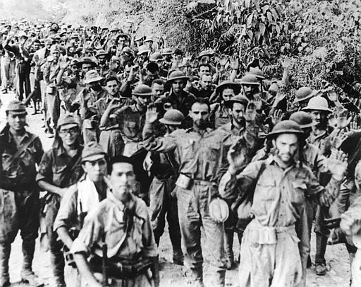
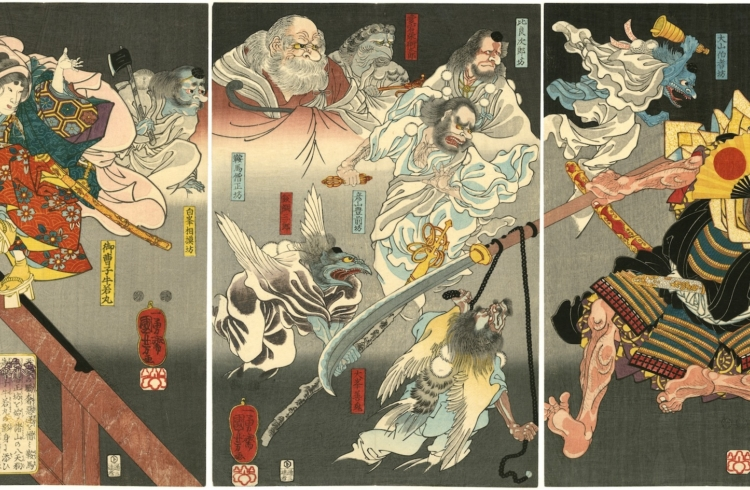
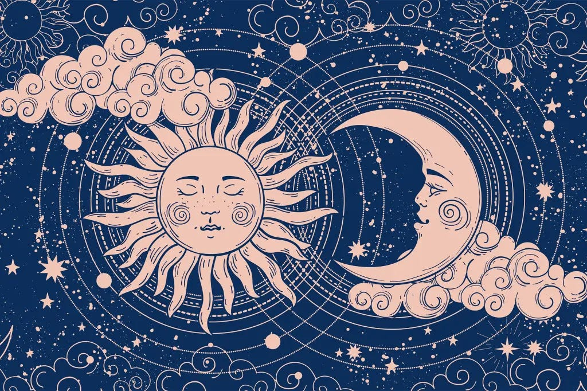
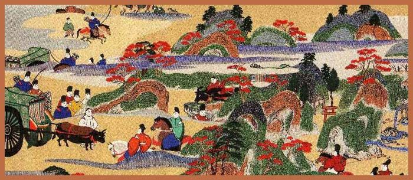
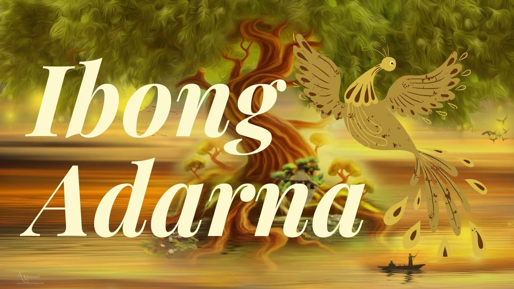

J A P A N E S E P E R I O D
|  |
RIDDLES
| BANGKA (BOAT) |
SALAMIN (MIRROR) |
| May katawan ng kahoy,
may buhay ng tao.
(Has the body of wood,
has the life of a person.) |
Hindi tao, hindi hayop, walang
buhay, may katawan, patag, at makinis.
(Not a person, not an animal, without
life, has a body, flat, and smooth.) |
| BAHAY (HOUSE) |
SALAGUBANG (BEETLE) |
| A thing that is big and sturdy,
used in everyday life. |
Has wings, cannot fly, has
a body, cannot move. |
|
|  |
POEMS
| TUTUBI |
DRAGONFLY |
| Hila mo'y tabak...
Ang bulaklak, nanginig!"
Sa paglapit mo. |
You're pulling a saber
The flowers shivered
When you approached |
| ANYAYA |
INVITATION |
| Ulilang damo
Sa tahimik na ilog
Halika, sinta. |
Lonely grass
By the quiet river
Come, love. |
|
LEGEND

THE LEGEND OF THE SUN AND MOON
The story begins with the sun and the moon, each having their own star children with distinct characteristics.
The moon's star children are described as reddish and cool, contrasting with the sun's yellowish, bright, and hot children.
The moon fears for her children's survival if they interact with the sun's children, leading her to consider a drastic solution.
The moon devises a plan to convince the sun to eliminate her own children to alleviate the perceived overcrowding in the heavens.
The moon visits the sun and suggests killing the sun's children to create more space for play and peace of mind.
The sun is initially hesitant and anxious about the idea of killing her children but eventually agrees under the moon's persuasion.
The sun carries out the act of killing her star children, following the moon's advice.
Time passes, and the sun realizes the gravity of her actions, leading to feelings of guilt and despair.
The sun blames the moon for the tragedy and seeks revenge for the loss of her children.
The moon hides behind clouds, and when they clear, the moon's star children appear, angering the sun.
The sun chases the moon, resulting in an eclipse, which is a symbol of the ongoing conflict between the sun and the moon.
The cycle continues with the sun killing the moon's star children each morning as a form of revenge, perpetuating the myth.
SHORT STORY

LUPANG TINUBUAN
By: Narciso G. Reyes
Ang tren ay tumulak sa sali-salimuot na ingay. Sigawan ang mga batang nagtitinda ng mga babasahin, Tribune, mama,
Tribune, Taliba? Ubos na po. Liwayway, bagong labas. Alingawngaw ng mga habilinan at pagpapaalam. Huwag mong
kalimutan, Sindo, ang baba mo ay Sta. Isabel, tignan mo ang istasyon. Temiong, huwag mong mabitiw-bitiwan ang
supot na iyan. Nagkalat ang mga magnanakaw, mag-ingat ka! Kamusta na lang sa Ka Uweng. Sela, sabihin mong Mahal
Na Araw kami uuwi. Ang pases mo Kiko, baka mawaglit. Maligayang paglalakbay, Gng. Enriquez. Ngumiti ka naman, Ben,
hindi naman ako magtatagal doon at susulat ako araw-araw. Kamusta na lamang. Paalam. Hanggang sa muli.
Ang tren ay nabuhay at dahan-dahang kumilos. H-s-s-s-s-Tsug. Tsug. Naiwan sa likuran nina Danding ang takipsilim
ng Tutuban, at sila'y napagitna sa malayang hangin at sa liwanag ng umaga.
Sa sandaling iyon ay tila hawak ni Danding sa palad ang lihim na tinatawag na pag-ibig sa lupang tinubuan.
Nauunawaan niya kung bakit ang pagkakataon sa ibang bansa ay napakabigat na parusa at kung bakit ang mga nawawalay
na anak ay sumasalunga sa bagyo at baha makauwi lamang sa Inang Bayan. Kung bakit walang atubiling naghain
ng dugo sina Rizal at Bonifacio.
Sa kabila ng magiting na pangungusap ng pagbihirang pagpapakasakit, at ng kamatayan ng mga bayani ay nasulyapan ni
Danding ang kapirasong lupa, na kinatitirikan ng kanilang tahanan, kinabubuhatan ng kanilang mga kamag-anak, at >
nagtatago ng pamana ng kanilang mga angkan. Muli siyang napangiti.
Sa dako ng baybay ay nakarinig siya ng mga tinig, at nauulinigan niyang tinatawag ang kanyang pangalan. Dahan-dahan
siyang tumayo. Gabi na, kagat na ang dilim sa lahat ng dako. Walang buwan at may kadiliman ang langit. Ngunit
nababanaagan pa niya ang dulo ng mga kawayang nakapanood ng paglikha ng unang tula ng kanyang ama, at ang ilang
aandap-andap ng bituing saksi ng unang pag-ibig nito.
MYTH

IBONG ADARNA
King Fernando of Berbania falls ill after a disturbing dream about his son, Don Juan. The only cure is the song of the
mystical Adarna bird. His sons, Don Pedro, and Don Diego, fail in their attempts to capture the bird and are turned to stone.
Don Juan, helped by a wise old man, successfully captures the bird and revives his brothers, only to be betrayed by them.
Despite the betrayal, Don Juan rescues his brothers once again in Armenia and encounters two princesses, Donya Juana and Donya
Leonora. His journey leads him to the kingdom of Reino de Los Cristales and Donya Maria Blanca. To win her love, he accomplishes
difficult tasks set by her father, King Salermo, but is tricked and cursed to forget Maria Blanca.
Back in Berbania, Don Juan, with no memory of Maria Blanca, falls in love with Donya Leonora. Despite Maria Blanca’s attempts to
remind him of their past, he remains faithful to Leonora until his memory returns. Apologizing for his unfaithfulness, Don Juan vows
eternal loyalty. In the end, the kingdom of Berbania is given to Don Diego and Donya Leonora, while Don Juan and Maria Blanca rule over
Reino de Los Cristales.